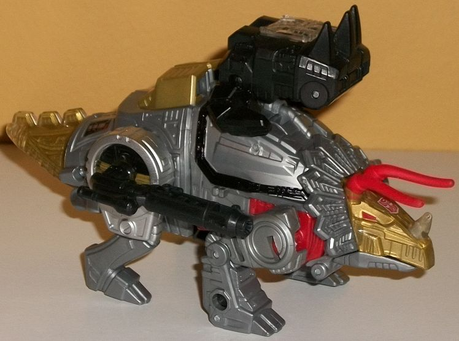
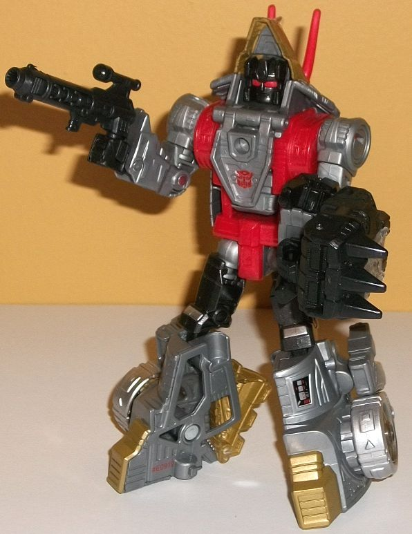
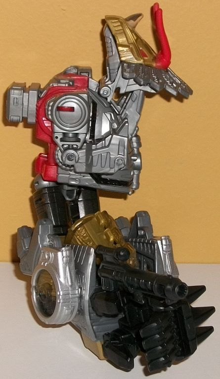
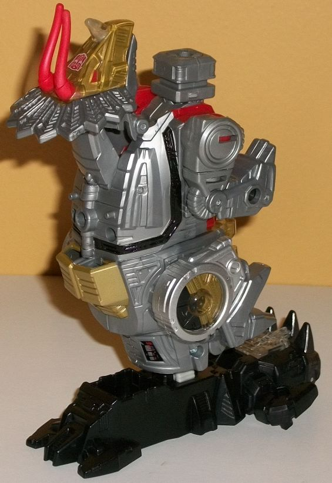

Allegiance
: Autobot
Size
: Deluxe
Difficulty of Transformation to Robot:
Easy
Difficulty of Transformation to Leg
:
Very Easy
Difficulty of Transformation to Arm
:
Very Easy
Color Scheme
: Milky gray, red, metallic
gold, and some black, metallic charcoal black, silver, dark red, and clear
plastic
Rating:
7.9


Slug's triceratops
mode is in general pretty darned G1 in terms of its overall look, but something
is definitely... off... about it, that much is clear right away. I don't
know if it's because he has to combine this time around, or if it's because
the body of the mold is re-used later (I would guess the latter), but the
head is WAY too close to the main body. Like, there's basically no separation
between the headcrest and the body-- he has no neck. The whole head itself
seems sloped back a bit unnaturally, as well. The tail is also a bit too
short and stubby, though that's not as big of a deal. The rear legs are
a bit 2-D, but still pretty passable, and the front legs look good, but
they're a bit too long in comparison to the rear legs-- they have to be
at a pretty big angle or they'l keep the front half much further up than
the back half. As a big plus, however, there's no robot mode extras in
this mode whatsoever, so that's cool. Color-wise, this toy is VERY G1-accurate.
The gray used for the main plastic is a very, very milky version, so much
so that it almost looks shiny-- almost. Silver paint is still definitely
preferable to this shade of gray plastic, but since it IS gray plastic,
it looks better than most gray plastics. On the dino head, tail, and on
the hips, there's also gold painted INSIDE clear plastic that's ridged
with many robotic details, which makes for a very nifty look. There's also
some red on the horns and eyes, with a bit visible on the sides, but most
of this color is relegated to the robot mode. There's some more gold on
the top (the pieces that become his robot feet), some black "wiring" detailing
across his front half, some silver on the hips, and some G1 sticker-like
paint decals on the base of the tail. The mold detailing on Slug is quite
impressive overall, with lots of ridges, tubes, wires, hinges, and the
like all over the place-- despite the fact that he's mostly gray, that
combined with the shade of this gray makes it so he doesn't look boring.
For articulation in this mode, Slug can move at the shoulders, front knees
(at two points), hips, rear knees, at the base of each horn (which are
made of soft, bendy plastic), and
theoretically
his mouth, though
it opens up in a very odd manner-- far too wide, and due to the transformation
behind where the actual jaw bone should be, so I prefer to keep it closed.
For accessories, Slug has his "Prime Armor", which essentially makes a
double-thumbed fist for the combiner modes, and there's a clear piece in
the center you can take out to put a Prime Master in to "power Slug up".
It has some cool spikes near the front, but it too obviously looks like
a hand and not anything else. You can plug it on the top of this mode or
in the center of either of his hips, but either way it's a bit eyesore
that doesn't fit in with the rest of the mode at all. Slug also has a simple
black blaster accessory with a scope-- pretty cool, but nothing to get
overly excited about. It can fit in the same spots the Prime Armor can.
In general keeping with
his G1 design, Slug's transformation is fairly simple. The front legs become
the arms, the dino jaw opens down to become the chest and reveal the robot
head, and the back halves rotate around to become the robot legs, with
the rear dino legs folded up a bit and the tail splitting in half and hiding
behind said lower legs (which also have heel panels to flip out to stabilize
Slug a bit more in this mode). In general this is a solid mode, and a pretty
good update of his G1 robot mode, especially considering that he combines.
I do wish Slug was a bit more "broad-chested" given that he's a Dinobot,
but I get why design-wise that's not the case. The rear dino legs do kinda
hang off his very large lower legs quite obviously, but that's about it
as far as kibble. The jaw becomes an excellent chestplate, and although
you could argue the triceratops head top behind Slug's robot head is an
extra, that's been a design staple of his, so I don't mind it. When looked
at from the side, you can see the front dino body extends behind Slug's
back quite a bit, but it doesn't get in the way of articulation and isn't
that visible from most angles you'll normally view him at. In this mode,
there's still plenty of milky gray, but the red plastic on the main body
is more prevalent in this mode. There's also some nice metallic charcoal
black on his upper legs and head, which looks great (his eyes are also
painted red in this mode as well). Other than these bits and the Autobot
symbol on his chest, though, there aren't any paint apps from this mode
that aren't carried over from the dino mode; because of the transformation,
beyond the chest there isn't much visible in this mode that wasn't visible
in dino mode either, but those parts that are continue to have a decent
amount of robotic detailing on them. Slug's headsculpt is spot-on, complete
with a no-nonsense look on his face. Slug's Prime armor can be fitted across
his chest, or you can stick it on the side of one of his arms as an over-sized
piece of bashing armor (given the spikes on the "knuckles" of said Prime
armor). For articulation, in this mode, Slug can move at the head (slightly,
because of the dino head it's embedded in), and at the shoulders, elbows
(at two points), downwards slightly at the wrists because of the transformation,
and rotation at the waist, as well as movement at the hips (at two points)
and knees. Thus, he's fairly articulated, and given his large lower legs,
very steady on his feet.


Slug's arm mode is pretty
much his robot mode with a few minor tweaks. The robot head is folded back
up into the dino head; the hands are also fitted back into the dino legs
and then they're spun around and connect to little pegs on his main body.
Then you basically just connect the legs together, turn them at the waist,
and fit his "Prime Armor" piece in the end to become his hand. Especially
for a combiner beast, this is a pretty decent limb-- none of the dino limbs
stick out much compared to the general form of the arm, and those front
legs do peg in fairly well into the main body. The triceratops head makes
for a nice shoulder (though there is an obvious gap between it and the
body, given its position). The back legs fold up pretty well on the lower
arm, though not quite as well as the front legs, and they don't peg into
place anywhere, unfortunately. However, the tail bits do cover up what
would be a pretty ugly gap in the lower arm pretty well and make the whole
thing look solid. As with basically any PotP combiner limb, in arm mode
Slug can move at the shoulder (at three points), at the elbow (at two or
three points, depending upon how you bend the arm), at the wrist, at the
base of each thumb, and at the base of the four fingers on his hand (all
as one piece; they don't move individually).
On the other hand, Slug's
leg mode is basically his triceratops mode, but with the tail folded up,
the head folded back so that the combiner peg can rotate up, and then you
just compress the dino legs as much as you can. It's okay, but it's not
as good as the arm mode-- the dino legs stick out of the sides more obviously
in this mode, and the front legs don't peg in anywhere in this mode, either,
unlike in arm mode. The dino head does make for a decent "kneecap", though.
Like with other PotP leg modes, you use the included "Prime Armor" piece
as the BACK of the foot, while the front part of the foot is formed from
one of the armor pieces that comes only with PotP Voyager-class toys. It
makes for a more stable foot, but it also looks weirder than "Combiner
Wars" feet pieces. Beyond there being two points of articulation at the
knee/combiner peg, and rotation at the ankle because of how the foot plugs
in, there isn't any articulation in this mode.
PotP Slug has a pretty good robot mode and arm mode, but his other two modes suffer from some definite draw backs. The dino legs stick out from the sides a bit too much on the leg mode, and for the dinosaur mode, it's a bit TOO obvious the body was made for other beast combiner figures besides a triceratops-- the head is just way too close to the body in that mode and the proprotions are off a bit. If you want a combining Slug, I mean... here you go, but get another version of the character if you just want a Slug/Slag toy and don't care about the combining aspect. The weakest Dinobot "limb", in my opinion.
Review by Beastbot